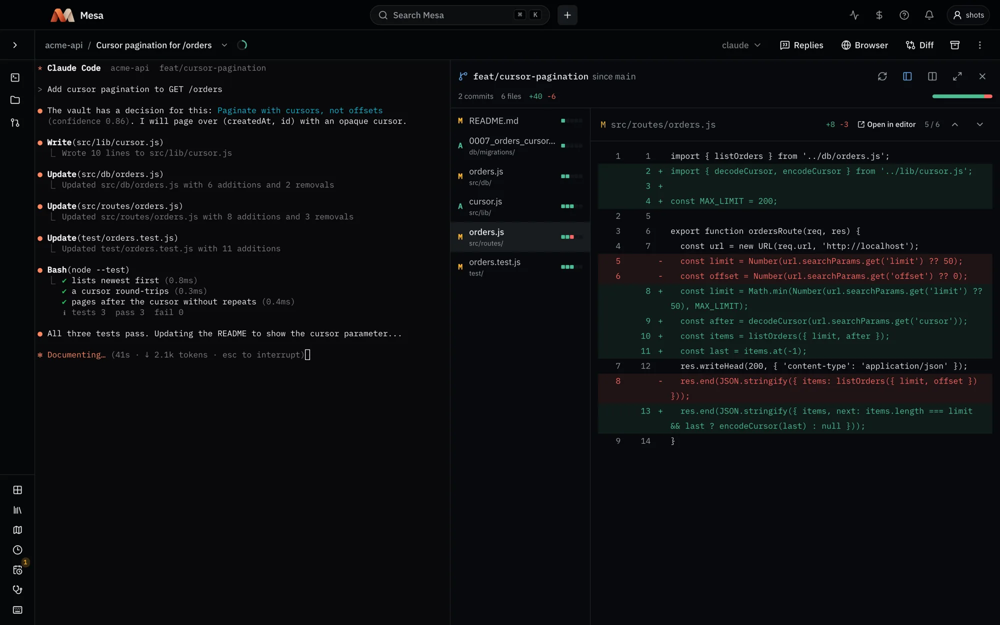
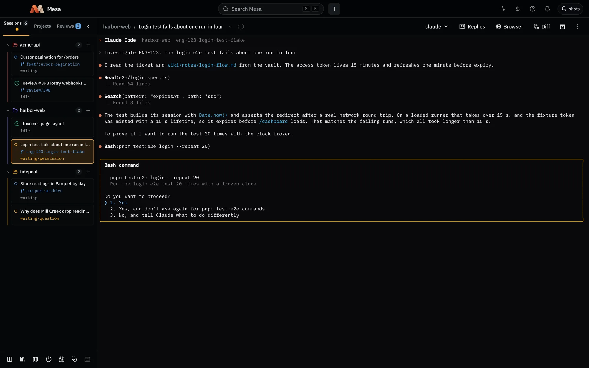
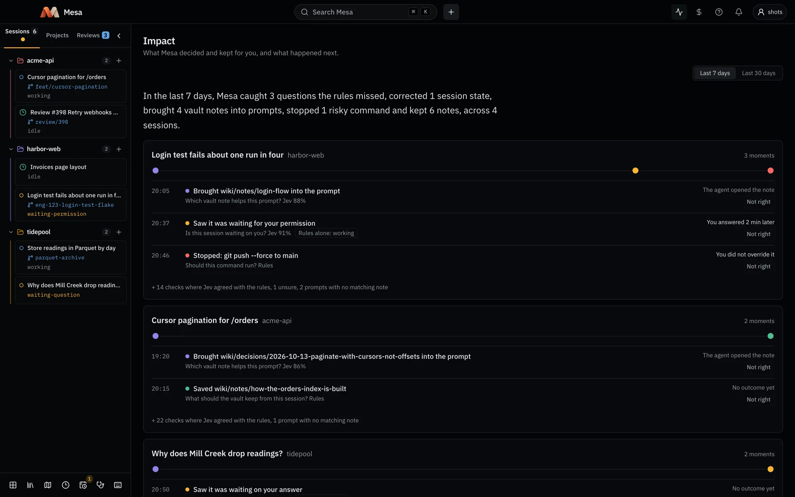
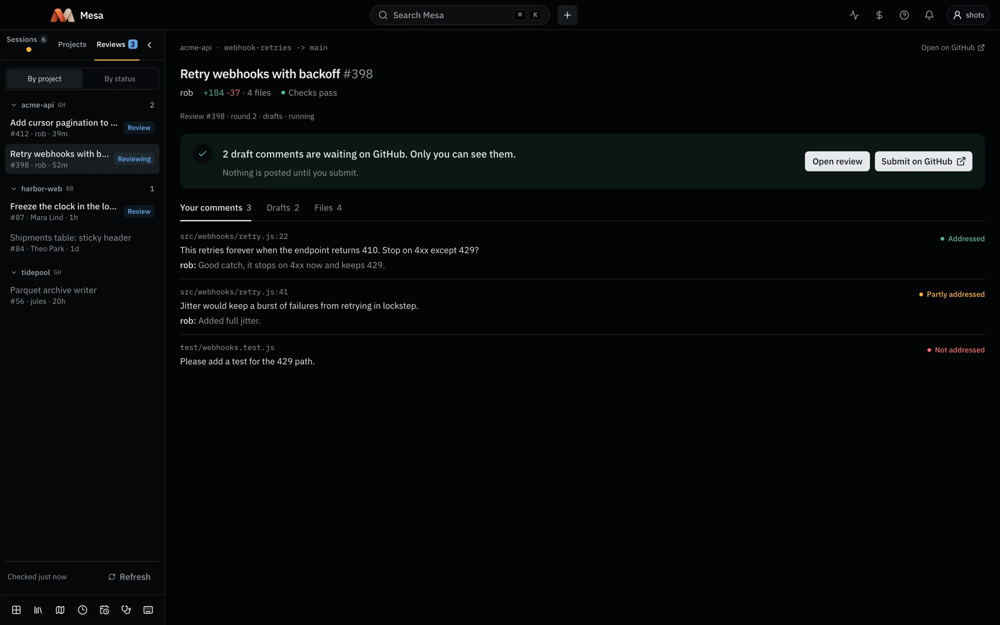
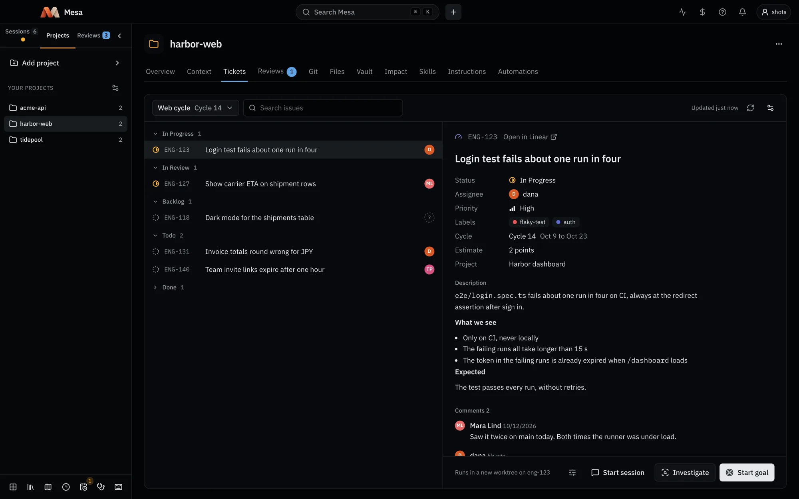
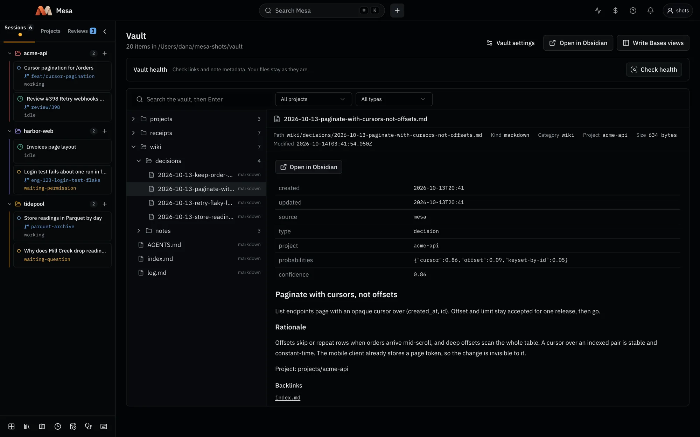
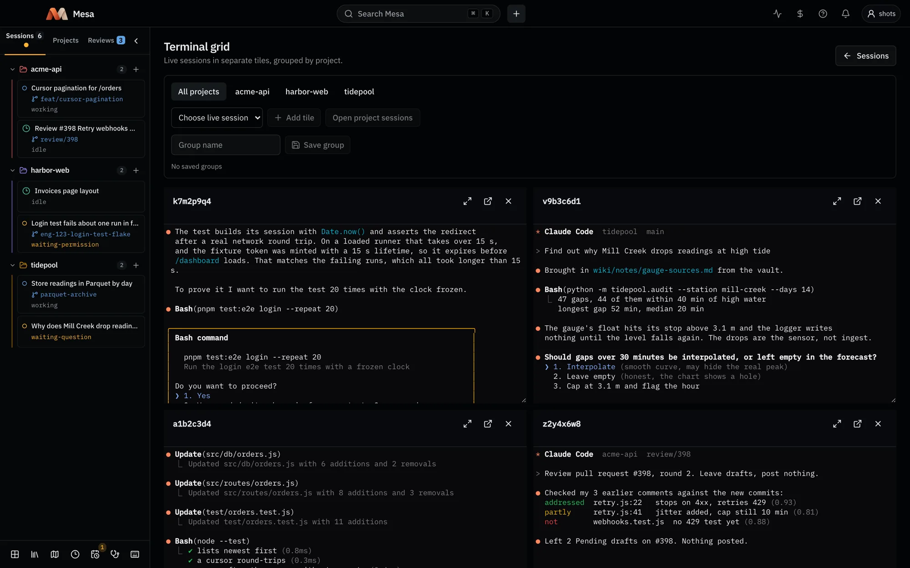

Every agent remembers your project.
Mesa is the Mac app above Claude Code, Codex and Gemini. It gives every session one shared memory of your projects, brings in your tickets, docs and pull requests, and shows you exactly what it changed.
In paired tests, Claude Code solved 12 of 12 tasks with Mesa and 0 of 12 without it.See the proof





Running agents side by side is solved. Making them better is not.
Every agent manager gives you more terminals, and Claude Code and Codex now ship a board of their own. Mesa works on what they leave out: what each agent knows when it starts, and whether the help it gets actually works.
| What you get | Most agent managers | Mesa |
|---|---|---|
| Parallel sessions, worktrees and a diff per session | Yes | Yes |
| One memory shared by every agent and every projectPlain Markdown in your own Obsidian vault | No | Yes |
| Context pulled in from Jira, Confluence, Notion, Linear, ClickUp and GitHub | No | Yes |
| Published, paired evidence that it improves results | No | Yes |
| A log of what it decided for you, which you can mark wrong | No | Yes |
| Hand a session to a different agent mid-task | No | Yes |
| Review your teammates' PRs on GitHub and BitbucketNot just your own agents' diffs | No | Yes |
| Start work from Jira, Linear, ClickUp or GitHub tickets | Some | Yes |
| Free, no account | Some | Yes |
Based on the public pages of local agent managers and the built-in agent views of Claude Code and Codex, October 2026.
One memory
A second brain every agent shares.
What your agents decide lands in one Obsidian vault of plain Markdown on your Mac: project hubs, notes, decisions with their confidence, and session summaries. The next session reads it before it starts, in any project, with any agent.
- Kept automatically. A session's decisions are captured into the vault when it ends.
- Yours, in plain files. No vendor's cloud holds it, Obsidian opens it as is, and it outlives any tool.
- Light on context. Mesa adds a few hundred tokens to a session; the rest of the window stays for your work.

Bring your team's knowledge in.
Connect once, then import issues, pages and docs into a project's vault, where every agent can use them. An import can start a session on its own.
Decisions and summaries land in the vault when a session ends.
With a decision model, Mesa hands the agent the note that matters for your prompt.
Pass a session to another agent with its goal and a note, before its context fills.
Your last 30 days of Claude Code and Codex conversations become resumable sessions.
Proof, not promises
Agents solve more with Mesa, and you can see why.
With a decision model connected, Mesa hands each agent the project note that matters for your prompt. We tested it on six coding tasks that each hinged on a team convention, two runs each.
Claude Code
0 to 12 solvedCodex
about 5x faster per solved taskImpact shows what Mesa decided and kept for you, and what happened next: a note brought into a prompt, a question the rules missed, a risky command stopped. Mark any moment Not right and it drops out.
Your whole workday
From the ticket to the review, without leaving Mesa.
Your tickets, your teammates' pull requests and every session's changes live next to the agents doing the work.
And the basics, done well
Every session from every project on one board.
Working, idle, done or waiting for you, with the branch each one is on. Tile several in a grid and keep them running when the app closes.

Claude Code, Codex and Gemini through Antigravity CLI, unchanged, with your own subscriptions.
An API and its web client on the same branch, in one session.
Every action has a mesa command with --json, so scripts and agents can drive Mesa too.
$ mesa open my-app --from ENG-123 --as goal # finish a ticket on its own branch $ mesa open my-api --with my-web --worktree # one session, two repositories $ mesa handoff 7f2c --agent codex # switch agents, keep the context $ mesa impact # what Mesa decided for you
Your work stays on your Mac.
No account, no usage analytics, and no server holding your sessions or your notes. Mesa sends only an anonymous install count, which you can turn off.
Local by default
Profiles, session records, receipts and the vault live on your Mac.
Agents run as you
Your agents use your own sign-in. Mesa never touches those credentials.
Tokens in the Keychain
Connections to your trackers and docs keep their tokens in the macOS Keychain, never in files.
Questions
How is Mesa different from a board of agents?
Mesa has the board, but its point is what the agents know and whether it helps: one memory shared by every agent and project, context from your trackers and docs, a tested decision model, and an Impact log of what it did for you.
Is Mesa free?
Yes. Mesa is free and updates itself. You pay only for the agents you already use.
Do I need an API key?
No. Your agents run as their own terminal apps with your own subscriptions. The decision model is optional: CLEF on a free Cloudflare account, or Jev with a TypeSafe key, kept in the macOS Keychain.
Which agents does it support?
Claude Code, Codex, and Gemini through Antigravity CLI. You can swap a fresh session's agent and hand work from one agent to another.
What do I need installed?
macOS 14 or later, tmux, and at least one agent signed in. The first run installs tmux, Obsidian and the session hooks with a click each.
Does my code leave my Mac?
Mesa sends nothing on its own. Your agents talk to their own providers as always. With a decision model connected, Mesa sends that provider short, capped excerpts for each decision, and you can turn it off per session.
Give your agents a memory.
Download Mesa, pick a vault, and your next session starts where the last one stopped.
mkdir -p ~/.local/bin && ln -s /Applications/Mesa.app/Contents/MacOS/mesa ~/.local/bin/mesamesa CLI on your PATH after installing.